Key Technologies
ZooKeeper
Learn about how you can use ZooKeeper to solve a large number of problems in System Design.
Coordinating distributed systems is hard. While processing power and scaling techniques have evolved dramatically, the fundamental problem remains: how do you orchestrate dozens or hundreds of servers to work together seamlessly? When these machines need to elect leaders, maintain consistent configurations, and detect failures in real time, you face the exact problems that ZooKeeper was designed to solve.
Released in 2008, ZooKeeper has aged, and numerous alternatives have emerged. Nevertheless, it remains central to the Apache ecosystem in particular.
Despite its age, understanding ZooKeeper teaches essential distributed systems concepts that apply even if you never use it directly. By learning how ZooKeeper handles coordination through simple primitives (hierarchical namespace, data nodes, and watches), you gain insights into solving universal problems like consensus, leader election, and configuration management.
Let's walk through how ZooKeeper works, when you should use it, and how it's evolving in today's landscape of distributed systems.
A Motivating Example
To understand why coordination is tough, let's start with an example. Imagine you're building a chat application.
Initially, your chat app runs on a single server. Life is simple. When Alice sends a message to Bob, both users are connected to the same server. The server knows exactly where to deliver the message - it's all in-memory, low latency, no coordination needed.
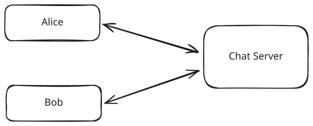
Single server chat app
But your app gets popular. A single server can't handle the load anymore, so you add a second server. Now you have a problem: when Alice (connected to Server 1) sends a message to Bob (connected to Server 2), Server 1 needs to know where Bob is located to deliver the message. How does Server 1 discover which server Bob is connected to?
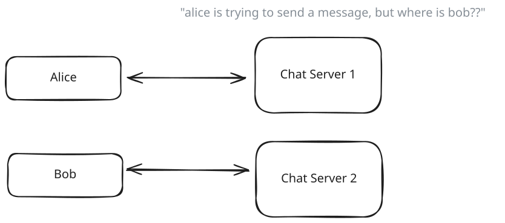
Two server chat app
You might think, "I'll just use a database!" Store a table that maps users to their servers. When a user connects, update the database. When a message needs routing, check the database. Simple, right?
But this introduces new problems. The database becomes a single point of failure. If it goes down, your entire chat system breaks. It also adds latency - every message now requires a database lookup before routing. As your system scales to millions of users, this database gets hammered with queries, creating a bottleneck.
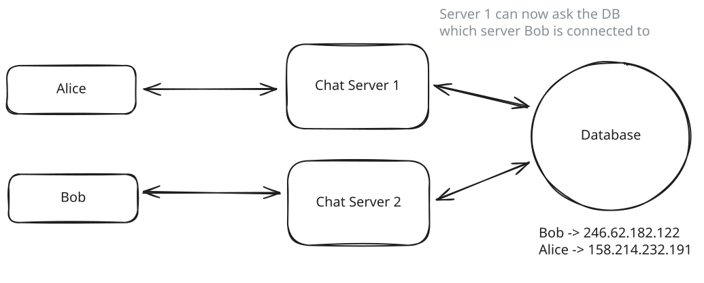
Database chat app
You might try to optimize with caching, but now you have cache consistency issues. What if a user disconnects from Server 2 and reconnects to Server 3, but Server 1's cache still thinks they're on Server 2? Messages get lost.
So you think, "I'll have servers directly tell each other about changes!" When a user connects to Server 3, it broadcasts to all other servers. But as your system grows to dozens or hundreds of servers, these broadcasts create a lot of network traffic. Every server has to maintain connections with every other server - that's n² connections, which doesn't scale well.
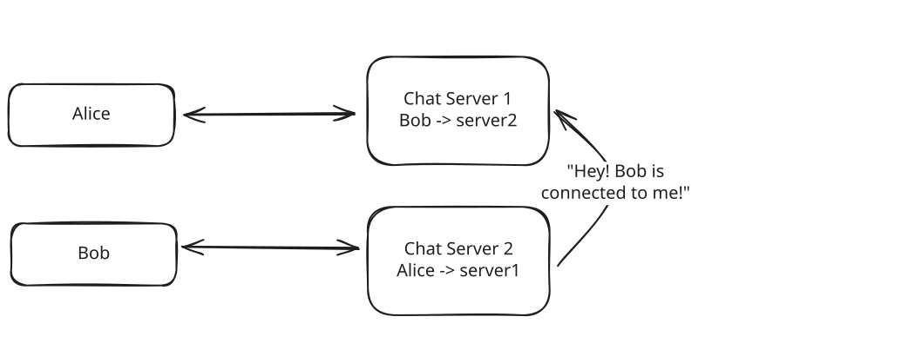
Broadcast chat app
Then you face the server failure problem. What if Server 2 crashes? It can't tell anyone it's down. Users connected to it are disconnected, but other servers don't know that. They keep trying to send messages to a dead server.
So you implement heartbeats - servers periodically check if other servers are alive. But this creates a new issue: the famous "network partition" problem. What if Server 2 is alive but there's a network issue between it and Server 1? Server 1 thinks Server 2 is dead, but it's not. Some servers might see Server 2 as alive while others see it as dead. You now have an inconsistent view of your system state.
While a chat application could alternatively use pub/sub patterns to avoid some coordination issues, we're focusing on scenarios where direct coordination is necessary to illustrate ZooKeeper's capabilities. Many real-world systems need the kind of coordination problems we're discussing here.
Each of these problems - service discovery, configuration sharing, failure detection, leader election, and distributed consensus - are fundamental challenges in distributed systems. Solving them correctly is incredibly difficult, requiring algorithms that can handle partial failures, network delays, and still maintain consistency. This is precisely the set of problems ZooKeeper was built to solve.
ZooKeeper solves all the problems we've discussed above. It provides a consistent, reliable source of truth that all servers can trust. When servers come online, they register in ZooKeeper. When users connect to servers, that mapping gets stored in ZooKeeper. ZooKeeper then notifies interested servers about changes and automatically handles failures through its ephemeral nodes. It gives you reliable service discovery, configuration management, and leader election without building these complex distributed algorithms yourself.
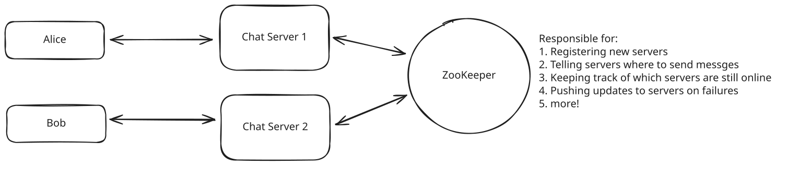
ZooKeeper chat app
Let's take a closer look at how ZooKeeper handles these challenges.
ZooKeeper Basics
At its core, ZooKeeper provides a simple but powerful set of primitives that help solve complex distributed coordination problems. To understand how it works, we need to explore three key concepts: the data model based on ZNodes, the server roles within a ZooKeeper ensemble, and the watch mechanism that enables real-time notifications.
The way to think of ZooKeeper is like a synchronized metadata filesystem — each node that's connected should have the same view of this data. This consistent view across all participating servers is what makes ZooKeeper so powerful for coordination tasks.
Data Model: ZNodes
ZooKeeper organizes its data in a hierarchical namespace that looks a lot like a file system or a tree. The nodes in this tree are called ZNodes. Unlike traditional folders in a file system, however, ZNodes can store data (typically small amounts, under 1MB) and have associated metadata.
Each ZNode is identified by a path, similar to file system paths. For instance, /app1/config might represent the configuration for an application called "app1". The key thing to understand is that ZNodes are designed to store coordination data, not bulk data like images or large documents -- this means the data stored in ZNodes is typically small, while the number of ZNodes is typically large (in the order of thousands).
ZNodes come in three main flavors, each serving a specific purpose in our chat application:
-
Persistent ZNodes: These nodes exist until explicitly deleted. In our chat app, we would use persistent nodes for configuration data like maximum message size or rate limiting parameters.
# Store the maximum message size in bytes create /chat-app/config/max_message_size "1024" -
Ephemeral ZNodes: These are automatically deleted when the session that created them ends (whether through client disconnection or timeout). This is perfect for tracking which servers are alive and which users are online.
# Server 2 registers itself when it starts up create -e /chat-app/servers/server2 "192.168.1.102:8080" # When Bob connects to Server 2, it creates: create -e /chat-app/users/bob "server2" # If Server 2 crashes, both nodes automatically disappear! -
Sequential ZNodes: These have an automatically appended monotonically increasing counter to their name. In our chat app, we could use this for ordering messages or implementing distributed locks.
# Alice sends a message to the global chat create -s /chat-app/channels/global/msg- "Alice: Hello everyone!" # Creates /chat-app/channels/global/msg-0000000001
For our chat application, you could imagine a structure like this:
/chat-app
/servers # Directory of available servers
/server1 # Ephemeral node containing "192.168.1.101:8080" the location of this server
/server2 # Ephemeral node containing "192.168.1.102:8080" the location of this server
/server3 # Ephemeral node containing "192.168.1.103:8080" the location of this server
/users # Directory of online users
/alice # Ephemeral node containing "server1" the server that alice is connected to
/bob # Ephemeral node containing "server2" the server that bob is connected to
/config # Application configuration
/max_users # Persistent node containing "10000" the maximum number of users allowed
/message_rate # Persistent node containing "100/sec" the maximum number of messages per second allowed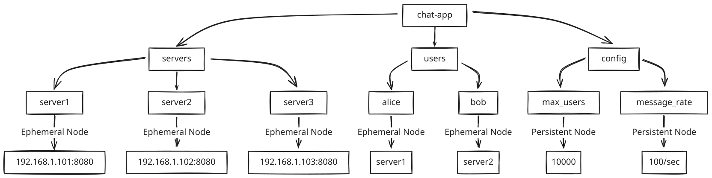
ZooKeeper ZNode hierarchy
This solves our coordination problem elegantly. When Alice (on Server 1) wants to send a message to Bob, Server 1 just looks up /chat-app/users/bob to discover Bob is on Server 2, then routes the message appropriately. If Bob disconnects and reconnects to Server 3, the ZNode is automatically updated, ensuring messages are always routed correctly.
In reality, a popular chat app would have millions of users online, and we would not want to have a ZNode for each user. Instead, we could use consistent hashing where servers register in ZooKeeper while users are mapped to servers using a hash function based on their user ID. This approach requires ZooKeeper to track only servers rather than millions of individual users, making it much more scalable while still providing rapid failure detection through ephemeral server nodes.
Server Roles and Ensemble
ZooKeeper isn't designed to run on a single server - that would create a single point of failure. Instead, it runs on a group of servers called an ensemble. A typical production deployment consists of 3, 5, or 7 servers (odd numbers help with majority decisions).
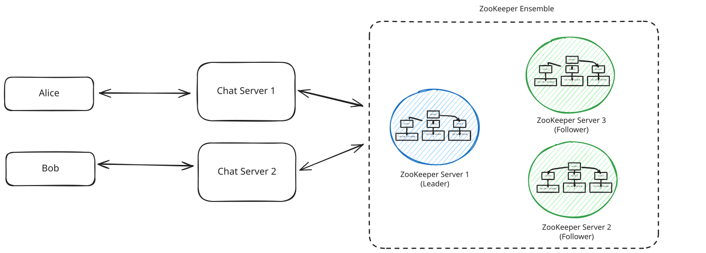
ZooKeeper Ensemble for Chat App
Within this ensemble, servers take on different roles:
- Leader: One server is elected as the leader and is responsible for processing all update requests. When Server 2 registers a new user connection in ZooKeeper, this write request goes to the leader.
- Followers: The rest of the servers follow the leader's instructions and help serve read requests. When Server 1 needs to find where Bob is connected, it can read this information from any ZooKeeper server in the ensemble.
This distributed design addresses the single point of failure problem we encountered when using a database for user-server mapping. If one ZooKeeper server fails, the ensemble continues to function as long as a majority (quorum) of servers are available. For example, with our 3-server ensemble, ZooKeeper can tolerate 1 server failure.
When our chat servers connect to ZooKeeper, they connect to all servers in the ensemble:
// Chat Server 1 connecting to ZooKeeper
ZooKeeper zk = new ZooKeeper("zk1:2181,zk2:2181,zk3:2181",
3000, /* session timeout */
watcher /* callback */);This ensemble design ensures our critical coordination data—which users are connected to which servers—remains highly available and durable, even when individual ZooKeeper servers fail.
Watches: Knowing When Things Change
One of ZooKeeper's most powerful features is its watch mechanism, which solves our chat app's notification problem elegantly. Watches allow servers to be notified when a ZNode changes, eliminating the need for constant polling or complex server-to-server communication.
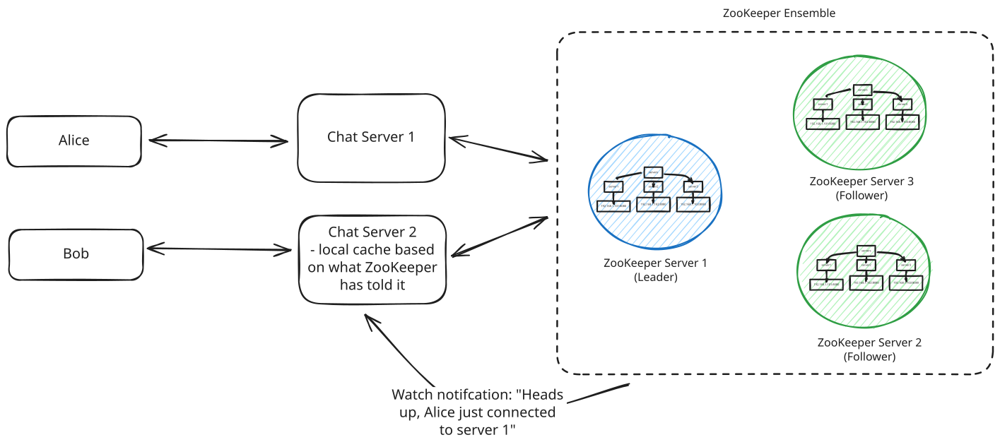
ZooKeeper Watches
Without watchers, every time a new message is sent, the server would need to query ZooKeeper to find the recipient's location. This would create significant latency and put enormous pressure on the ZooKeeper cluster. At scale, with thousands of messages per second, ZooKeeper would quickly become a bottleneck rather than a solution.
In our chat application, here's how watches help:
-
When Server 1 starts up, it sets a watch on the /chat-app/users directory:
// Server 1 watching for user changes zk.getChildren("/chat-app/users", true, null); -
When Bob disconnects from Server 2 and reconnects to Server 3, Server 3 updates Bob's ZNode:
// Server 3 updates Bob's location zk.setData("/chat-app/users/bob", "server3".getBytes(), -1); -
ZooKeeper automatically notifies Server 1 about this change through its watcher callback:
// Server 1's watcher callback public void process(WatchedEvent event) { if (event.getType() == EventType.NodeDataChanged && event.getPath().equals("/chat-app/users/bob")) { // Get updated server for Bob byte[] data = zk.getData("/chat-app/users/bob", true, null); String bobsServer = new String(data); // Update routing table: Bob is now on Server 3 routingTable.put("bob", bobsServer); } }
This watch mechanism eliminates the complex broadcast system we were considering. Instead of each server having to maintain connections with every other server (n² connections), all servers just connect to ZooKeeper. When a user moves between servers, only the servers that care about that user receive notifications.
And what about server failures? If Server 2 crashes, its session with ZooKeeper ends, and all its ephemeral nodes (including those for connected users) are automatically deleted. Other servers watching these nodes receive notifications and can take appropriate action, such as marking those users as offline.
Importantly, watchers enable a key pattern where servers keep a local cache of the ZooKeeper state. When a server wants to know where Bob is, it doesn't need to query ZooKeeper - it can just look in its local cache. If something is changed, the server will be notified and can update its local cache.
This is why ZooKeeper is described as a "coordination service" rather than a "database" - it's designed to notify systems of changes, not to handle high-volume read traffic.
By combining these three fundamental concepts - ZNodes for data storage, a reliable server ensemble, and watches for change notifications - ZooKeeper creates a powerful foundation that elegantly solves all the distributed coordination challenges we faced in our chat application.
Key Capabilities
We've looked at a chat app, but ZooKeeper doesn't stop there. It can be used for four main capabilities: Configuration Management, Service Discovery, Leader Election, and Distributed Locks. Let's take a look at how it works for each of these.
ZooKeeper for Configuration Management
One of the most common uses of ZooKeeper is to store and distribute configuration data across a distributed system. This might include database connection strings, feature flags, or service endpoints.
In our chat application, we already saw how we could store configuration values:
/chat-app/config/max_message_size "1024"
/chat-app/config/message_rate "100/sec"The real power comes from ZooKeeper's ability to notify all interested services when configuration changes. Imagine you want to enable a new feature across your entire chat platform. With ZooKeeper, you can:
- Update a single ZNode: set /chat-app/config/enable_reactions "true"
- All chat servers watching this node receive a notification
- Servers update their behavior without restarting
This creates a powerful centralized configuration management because it enables real-time propagation, versioning, and atomic updates.
Here's how an e-commerce platform might use ZooKeeper for configuration:
/ecommerce
/config
/pricing_algorithm "dynamic_v2" # Switch pricing algorithm across all services
/discount_threshold "50.00" # Update discount threshold in real-time
/maintenance_mode "false" # Toggle maintenance mode off/onWhen using ZooKeeper for configuration, focus on storing dynamic configuration values that might change at runtime. Static configuration that only changes during deployments is often better kept in files or environment variables.
Most modern cloud providers offer their own configuration management solutions. For example, AWS has AWS Systems Manager Parameter Store, and Azure has Azure App Configuration. If working within a cloud provider, consider using their native solutions instead of ZooKeeper.
ZooKeeper for Service Discovery
Service discovery is the process of automatically detecting services and endpoints in a distributed system. As services come online, they register themselves; as they go offline, they deregister (or their ephemeral nodes expire).
We saw this in action with our chat servers registering themselves:
create -e /chat-app/servers/server2 "192.168.1.102:8080"This pattern enables dynamic scaling, load balancing, and health checking.
Consider a microservice architecture for an online streaming platform:
/streaming
/services
/video-transcoder
/instance1 "10.0.0.1:8080"
/instance2 "10.0.0.2:8080"
/recommendation-engine
/instance1 "10.0.1.1:9000"
/instance2 "10.0.1.2:9000"
/payment-processor
/instance1 "10.0.2.1:5000"When a new video upload service needs to find available transcoders, it simply:
- Reads /streaming/services/video-transcoder children
- Connects to one of the available transcoder instances
- Sets a watch to be notified of any changes to the available transcoders
Many modern systems now use dedicated service discovery tools like Consul or etcd, or rely on platform-provided solutions like Kubernetes Services or AWS Service Discovery. However, the patterns these tools implement are very similar to ZooKeeper's approach, and in some cases, they even use ZooKeeper internally.
ZooKeeper for Leader Election
In distributed systems, it's often necessary to designate one node as a "leader" responsible for certain operations. For example, you might want only one server to process payment transactions or schedule jobs. Having a leader allows you to coordinate these operations and ensure only one server is doing them at a time.
ZooKeeper's sequential ZNodes make leader election straightforward:
- Each server creates a sequential ephemeral node under a designated path
- The server with the lowest sequence number becomes the leader
- All other servers watch the node with the next lowest sequence number
- If a leader fails, its node disappears, and the next server in sequence steps up
Here's how it might look in our chat application if we wanted to elect a server to handle global announcements:
# Server 1 creates:
create -s -e /chat-app/leader/node- "server1" # Creates /chat-app/leader/node-0000000001
# Server 2 creates:
create -s -e /chat-app/leader/node- "server2" # Creates /chat-app/leader/node-0000000002
# Server 3 creates:
create -s -e /chat-app/leader/node- "server3" # Creates /chat-app/leader/node-0000000003Server 1 is now the leader since it has the lowest sequence number. Server 2 watches node-0000000001, and Server 3 watches node-0000000002. If Server 1 fails, its node disappears, Server 2 is notified and becomes the new leader, and Server 3 now watches Server 2.
This pattern allows for automatic failover and ensures only one server is performing the critical operation at any time.
The same approach is used in systems like HBase, where one server must coordinate schema changes, and in Kafka's earlier versions, where a controller broker manages partition leadership.
ZooKeeper for Distributed Locks
Distributed locks allow multiple processes across different machines to coordinate access to shared resources. They're important for preventing race conditions in distributed systems.
ZooKeeper implements distributed locks using sequential ephemeral ZNodes:
- Each client trying to acquire the lock creates a sequential ephemeral node under a lock path
- All clients sort the nodes by sequence number
- The client with the lowest sequence number holds the lock
- Each client watches the node with the next lower sequence number
- When a client releases the lock (or crashes), its ZNode is removed, and the next client is notified
For our chat application, imagine implementing rate limiting on message sending:
# Client 1 wants to send a message:
create -s -e /chat-app/locks/send_message- "client1" # Creates /chat-app/locks/send_message-0000000001
# Client 2 also wants to send:
create -s -e /chat-app/locks/send_message- "client2" # Creates /chat-app/locks/send_message-0000000002
# Client 1 sends its message, then deletes its node
delete /chat-app/locks/send_message-0000000001
# Client 2 is notified and now holds the lockThis distributed lock pattern can be used for things like resource allocation, concurrency control, and clustered scheduling.
While ZooKeeper's locks work well, they're not designed for high-frequency locking (hundreds of times per second). For such use cases, consider specialized solutions like Redis-based locks or database transactions.
When to choose ZooKeeper locks over Redis locks?
In our Ticketmaster and Uber breakdowns, we used Redis distributed locks for their superior performance and simplicity. Choose ZooKeeper locks instead when you need stronger consistency guarantees for critical operations where correctness trumps performance (like financial transactions). ZooKeeper is also preferable for long-lived locks (hours) where its automatic failure detection via ephemeral nodes provides more robust handling of server crashes than Redis locks which would require careful timeout management and heartbeat mechanisms.
How ZooKeeper Works
Now that we understand what ZooKeeper can do, let's explore how it accomplishes all this under the hood.
The reality is it's very unlikely you'll need to know this for your interviews. However, many of the concepts here are highly applicable to distributed systems and are good to understand, even outside the context of ZooKeeper. That said, if you're feeling overwhelmed, don't worry - you can skip this section.
Consensus with ZAB
As we talked about earlier, ZooKeeper itself is made up on an ensemble of servers. In other words, there are multiple servers all running the same ZooKeeper software and coordinating with each other. There's a beautiful irony here: ZooKeeper helps other applications solve their coordination problems, but first it had to solve its own coordination challenges as a distributed system itself.
At the heart of ZooKeeper is the ZooKeeper Atomic Broadcast (ZAB) protocol. ZAB is what enables all ZooKeeper servers to agree on the state of the system, even when servers fail or network issues occur.
ZAB works in two main phases:
- Leader Election: When the ZooKeeper ensemble starts or the current leader fails, servers use a voting process to elect a new leader. The primary factor in leader election is having the most up-to-date transaction history. If multiple servers have equivalent transaction histories, then the server with the highest ID will be preferred. (Confusingly, this is the opposite of the application-level leader election pattern we saw earlier, where the node with the lowest sequential ZNode number becomes the leader—a perfect example of how ZooKeeper's internal mechanisms can differ from the patterns built on top of it.)
- Atomic Broadcast: Once a leader is elected, all write requests go to the leader. The leader then broadcasts these changes to all followers. A write is only considered successful when a majority (quorum) of servers have persisted the change.
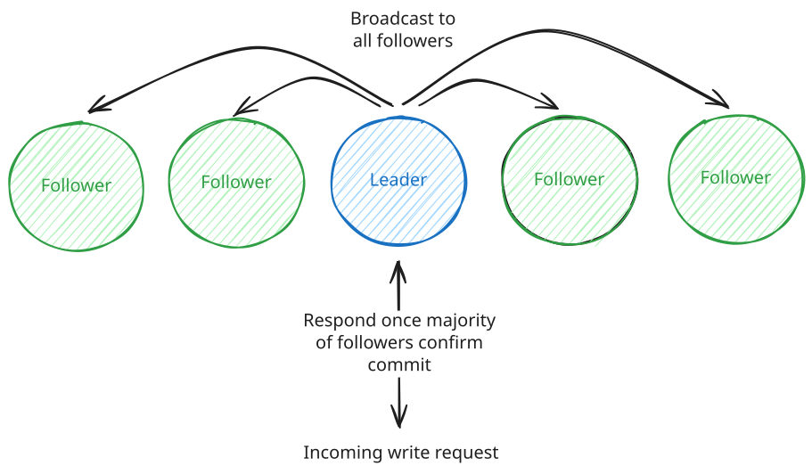
ZAB
For our chat application, this means when Server 2 registers a new user Bob by creating a ZNode, the following happens:
1. Server 2 → ZooKeeper Leader: "Create a ZNode at /chat-app/users/bob with value 'server2'"
2. ZooKeeper Leader → All Followers: "Let's add this new ZNode for Bob"
3. Followers → Leader: "Change accepted and saved" (majority needed)
4. Leader → Server 2: "Bob's ZNode has been created successfully"ZAB is similar to the Paxos and Raft consensus algorithms you might have heard of. While ZAB predates Raft and has some implementation differences, the high-level goal is the same: achieving consensus in a distributed system.
This two-phase protocol ensures that even if some servers crash or network partitions occur, the remaining servers will maintain a consistent view of the data. The quorum requirement (majority of servers) means that with a 5-server ensemble, ZooKeeper can tolerate 2 server failures and still function correctly.
Strong Consistency Guarantees
ZooKeeper provides several important consistency guarantees that make it reliable for distributed coordination:
- Sequential Consistency: Updates from a client are applied in the order they were sent. If a client updates node A and then node B, all servers will see the update to A before the update to B.
- Atomicity: Updates either succeed or fail completely. There are no partial updates.
- Single System Image: Regardless of which server a client connects to, it will see the same view of the system (after synchronization). A client can read from any server, but all writes go through the leader.
- Durability: Once an update is applied, it persists until overwritten by a client. Even if servers fail and restart, the updates are not lost.
- Timeliness: The system guarantees that clients' views of the system are updated within a bounded amount of time.
ZooKeeper achieves these guarantees through its ZAB protocol. All writes funnel through the leader, establishing a total ordering of updates, and are only considered successful when a quorum of servers persists them to transaction logs. The protocol uses a two-phase commit process where the leader proposes updates, waits for acknowledgments, and only then commits changes - ensuring atomicity and durability even if servers fail.
For maintaining the single system image, ZooKeeper uses version numbers for each ZNode and synchronization protocols that allow followers to catch up after disconnections. However, reads from followers can return stale data since they don't consult the leader on every read. For the strongest consistency, clients can use the "sync" operation before reading to ensure they get the most up-to-date data.
While ZooKeeper provides strong consistency, it is not designed for high-throughput read/write scenarios. It's optimized for workloads with more reads than writes and where the data size is relatively small.
Read and Write Operations
ZooKeeper's architecture is specifically optimized for read-dominant workloads. This design choice influences how read and write operations are handled:
- Read Operations: Any server in the ensemble can serve read requests directly from its in-memory copy of the data. This provides high throughput and low latency for reads, which is why ZooKeeper excels at "read-dominant" workloads with ratios of around 10:1 reads to writes.
- Write Operations: All write requests must go through the leader, which coordinates the update across the ensemble using the ZAB protocol. This centralized approach ensures consistent ordering but makes writes more expensive than reads.
For our chat application, this means:
- When Server 1 needs to find where Bob is connected (a read operation), it can query any ZooKeeper server.
- When Server 3 needs to update Bob's location (a write operation), this request goes to the leader, which then synchronizes it across the ensemble.
Because reads are served locally by each server, it's possible for a client to read stale data if it connects to a follower that hasn't yet synchronized with the leader. For applications requiring the strongest consistency, ZooKeeper provides "sync" operations that ensure a server is up-to-date before performing a read.
Sessions and Connection Management
ZooKeeper uses the concept of sessions to manage client connections and maintain ephemeral nodes. Sessions are crucial for detecting client failures and implementing features like ephemeral nodes.
- Session Establishment: When a client connects to ZooKeeper, it establishes a session with a configurable timeout (typically 10-30 seconds).
- Heartbeats: The client sends periodic heartbeats to maintain its session. If ZooKeeper doesn't receive a heartbeat within the timeout period, it assumes the client has failed.
- Session Recovery: If a client loses its connection to a ZooKeeper server, it can connect to a different server and recover its session, as long as it does so before the session times out.
- Session Expiration: If a session expires, all ephemeral nodes created by that client are automatically deleted, and all watches registered by that client are removed.
For our chat application, this session mechanism provides automatic cleanup when servers or users disconnect unexpectedly:
1. Server 2 establishes a session with ZooKeeper when it starts
2. It creates ephemeral nodes for itself and connected users
3. If Server 2 crashes, its session eventually times out
4. ZooKeeper automatically removes all ephemeral nodes owned by Server 2
5. Other servers watching these nodes are notified about users going offlineConfiguring the right session timeout is critical. Too short, and temporary network issues might cause unnecessary session expirations. Too long, and your system will be slow to detect actual failures.
Storage Architecture
What about durability? How does ZooKeeper ensure that data is not lost, especially if a server in the ensemble crashes?
- Transaction Log: Every state change (transaction) is first written to a transaction log on persistent storage. This write-ahead logging ensures that no acknowledged update is ever lost, even if a server crashes immediately after confirming the update.
- Snapshots: Periodically, ZooKeeper creates snapshots of its in-memory database to speed up recovery. When a server restarts, it loads the most recent snapshot and then replays transaction logs to recover the complete state.
The ZooKeeper documentation emphasizes that the transaction log is the most performance-critical part of ZooKeeper:
"The most performance-critical part of ZooKeeper is the transaction log. ZooKeeper must sync transactions to media before it returns a response. A dedicated transaction log device is key to consistent good performance."
Memory swapping can severely impact ZooKeeper performance because all operations are ordered. If one request hits disk due to swapping, all queued requests will be delayed. Proper heap sizing is essential to avoid swapping.
Handling Failures
What happens if a ZooKeeper server within the ensemble fails?
- Server Failures: If a follower fails, the leader continues to operate as long as a quorum of servers remains available. If the leader fails, a new leader election occurs automatically by promoting the follower with the highest ID.
- Network Partitions: If the network is partitioned such that no group has a majority of servers, ZooKeeper will not process write requests until the partition is resolved. This prevents the "split-brain" problem where different parts of the system disagree about the current state.
- Client Failures: If a client fails, any ephemeral nodes it created are automatically removed after its session times out. This would be important for our chat application - if Server 2 crashes, all users connected to it are automatically marked as offline when their ZNodes disappear.
- Client Session Management: ZooKeeper tracks client sessions and provides mechanisms for clients to recover and reconnect after temporary disconnections, without losing their session state or watches.
Here's what happens in our chat application when a server fails:
1. Server 2 crashes
2. Server 2's ZooKeeper session times out (typically after 10-30 seconds)
3. All ephemeral nodes created by Server 2 are automatically deleted, including:
- /chat-app/servers/server2
- All /chat-app/users/X where X was connected to Server 2
4. Other servers with watches on these nodes receive notifications
5. They update their routing tables to mark users as offline
6. When a new Server 3 comes back online, it creates a new session and registers itselfThis automatic failure handling is one of ZooKeeper's most powerful features. It allows distributed systems to recover from failures without manual intervention, maintaining consistency throughout.
ZooKeeper's session timeout is a crucial configuration parameter. Set it too low, and temporary network issues might cause unnecessary failovers. Set it too high, and your system will take longer to detect and respond to actual failures.
ZooKeeper in the Modern World
While ZooKeeper remains a key player in distributed coordination, the landscape has evolved considerably since its introduction in 2008. Understanding how ZooKeeper fits into today's world of distributed systems will help you make better design choices in your interviews and prevent you from presenting potentially outdated solutions. ZooKeeper is still a battle-tested tool, but it's no longer the only option available.
Current Usage in Major Distributed Systems
ZooKeeper is still particularly popular within the Apache ecosystem. It's a core part of HBase, Hadoop, SolrCloud, Storm, NiFi, and Pulsar.
Other significant systems like ClickHouse require ZooKeeper for replication coordination, distributed DDL execution, and metadata storage in replicated setups.
Kafka's recent transition away from ZooKeeper represents a significant shift in the distributed systems landscape. After years of relying on ZooKeeper for coordination tasks, Kafka introduced the Kafka Raft Metadata mode (KRaft) to eliminate operational complexity, remove scalability bottlenecks, and reduce potential failure points. This move reflects a broader trend toward self-contained systems with built-in consensus protocols rather than external coordination services.
Alternatives to Consider
So, if ZooKeeper is less prominent than it used to be, what alternatives are out there?
etcd is popular in cloud-native environments and powers Kubernetes. It provides distributed key-value storage with strong consistency, offers modern HTTP/JSON and gRPC APIs, and is optimized for small datasets with high read volumes—ideal for configuration management and service discovery.
Consul by HashiCorp extends beyond basic coordination with service discovery, health checking, and a key-value store. Its standout feature is network infrastructure automation that dynamically configures load balancers and firewalls based on service changes, offering a more comprehensive approach than ZooKeeper's focused coordination.
Cloud Provider Solutions like AWS Parameter Store, Azure App Configuration, and Google Cloud Datastore provide managed coordination services that integrate with other cloud offerings. These solutions require minimal configuration and maintenance, making them practical alternatives worth mentioning in system design interviews.
With the rise of cloud-native solutions, many cloud providers offer built-in coordination services that abstract away the need for directly managing consensus systems like ZooKeeper. For example, in the AWS ecosystem, services like AWS ECS handle container orchestration through a centralized control plane, AWS CloudMap simplifies service discovery, and Amazon MSK provides ZooKeeper functionality as a fully managed service. These integrated solutions allow developers to focus on building applications rather than maintaining complex coordination infrastructure.
Limitations
Especially when deep in an infrastructure design interview, knowing the limitations of ZooKeeper is important. Here are the main ones that stand out:
Hot Spotting Issues: When many clients watch the same ZNode (common in leader election or locks), servers can be overwhelmed with notification traffic. At scale, popular nodes become bottlenecks—imagine millions of users coming online simultaneously in our chat example.
Performance Limitations: ZooKeeper's consistency model makes writes expensive as they must propagate through the leader to a quorum. Its in-memory storage model limits data capacity—keep ZNodes under 1MB and ensure your dataset fits in memory.
Operational Complexity: ZooKeeper requires careful configuration of Java parameters, disk layouts, and ongoing monitoring of timeouts and connections. As one maintainer put it: "ZooKeeper is simple to use but complex to operate."
If your design requires storing large amounts of data, handling extremely high write loads, or minimizing operational complexity, you might want to consider alternatives.
So when should you use ZooKeeper then?
The reality is it rarely should be the first thing you reach for, but there are places where ZooKeeper makes sense in an interview.
Smart Routing
In our chat application example, we've discussed how ZooKeeper helps route messages to the right server. But there's an even more sophisticated use case here. Even if we replaced ZooKeeper with a pub/sub broadcasting system for message delivery, we face an important optimization problem: limiting the number of channels or topics each server subscribes to. For optimal performance, we want users from the same chat room to be collocated on the same server. In other words, all websocket connections for a given chat room should be handled by the same server (to the extent possible).
This colocation strategy becomes even more important when designing systems like Facebook Live Comments or YouTube Live Chat. When millions of users are watching the same live video, having all viewers of that stream connected to the same server (or server group) minimizes cross-server communication overhead. ZooKeeper serves as the coordination point for your API gateway, maintaining a mapping of which chat rooms or live streams are handled by which servers. When a new user connects, your gateway queries ZooKeeper to determine the optimal server for that user based on their chat room or live stream ID.
The practical implementation might look like this: each server registers in ZooKeeper with its capacity and the list of rooms it's handling. Your API gateway, when receiving a new connection, queries ZooKeeper to find the appropriate server based on the user's intended room, then directs the user to connect there. If all servers handling a popular room reach capacity, ZooKeeper helps select a new server to expand the room's footprint in a coordinated way.
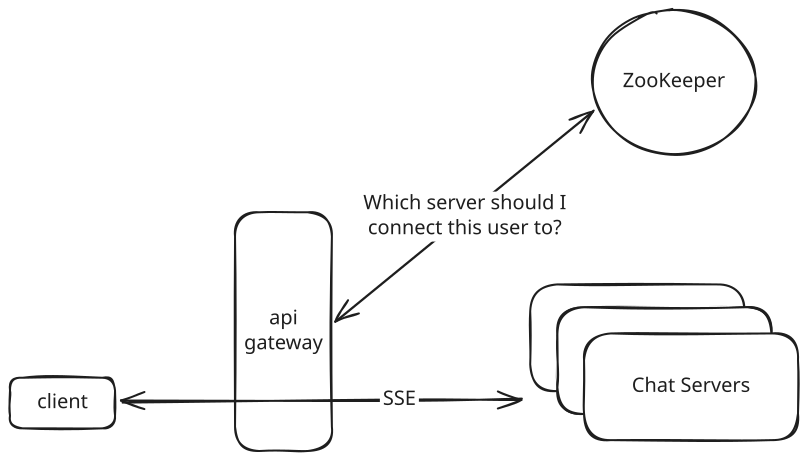
Smart Routing
This is an advanced topic that is likely only relevant in Staff+ interviews or Senior interviews focused deeply on distributed systems.
Certain Infrastructure Design Problems
ZooKeeper becomes particularly relevant in deep infrastructure system design interviews, such as "Design a distributed message queue" or "Design a distributed task scheduler." For these questions, ZooKeeper serves as the consensus "brain" of your system, just as Kafka historically used it. In a distributed message queue design, ZooKeeper would handle critical coordination functions:
When a broker joins the cluster, it registers itself in ZooKeeper, allowing other components to discover it. Topic creation involves writing metadata to ZooKeeper, including the number of partitions and their replication factor. The critical leader election process for each partition relies on ZooKeeper's sequential ephemeral nodes to ensure only one broker serves as the leader for each partition. Consumer groups track their membership and partition assignments in ZooKeeper, enabling rebalancing when consumers join or leave. And perhaps most importantly, broker failure detection happens through ZooKeeper's ephemeral nodes - when a broker dies, its session expires, and its nodes disappear, triggering reassignment of its partitions.
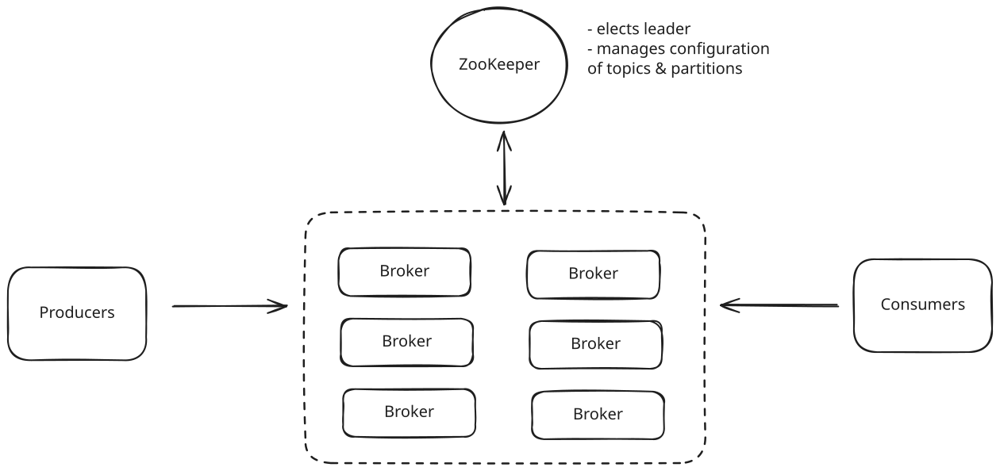
Distributed Message Queue
As mentioned, this exact pattern powered Kafka for years before KRaft, and similar approaches are used in other distributed systems like HBase, Hadoop, and Solr. When designing such systems, ZooKeeper provides a battle-tested solution for the complex coordination problems they face.
Durable Distributed Locks
While Redis can handle distributed locks for many use cases like ticketing systems, ZooKeeper is strictly better for scenarios requiring hierarchical locks with complex dependencies. For example, in a distributed file system, ZooKeeper excels when you need nested lock acquisition (like locking a directory and its files) with deadlock prevention. ZooKeeper's ability to maintain watch notifications on multiple nodes simultaneously allows clients to monitor the entire lock hierarchy, receiving immediate notifications about any changes in the lock structure. This is particularly valuable in systems where resources have parent-child relationships and lock acquisition must respect these hierarchies to prevent deadlocks and ensure data integrity across distributed components.
Summary
Let's recap.
ZooKeeper is a distributed coordination service that helps manage configuration, naming, and synchronization for distributed applications. It provides a simple file system-like interface but packs sophisticated capabilities for managing configuration, service discovery, leader election, and distributed locks. While newer alternatives like etcd, Consul, and cloud provider solutions exist, ZooKeeper's patterns in particular are fundamental to distributed systems design.
But be careful. You don't want to jump to ZooKeeper in your next system design interview unless you're designing a deep infrastructure system and need to discuss how to manage careful coordination across multiple servers or you need more advanced functionality than is offered out of the box by modern load balancers and built in service discovery tools.
References
- Apache ZooKeeper Getting Started Guide
- Apache ZooKeeper Internals Documentation
- ZooKeeper: Wait-free coordination for Internet-scale systems
Test Your Knowledge
Answer the question below to find your gaps.
Question 1 of 15
What is ZooKeeper primarily used for in distributed systems?
1
Real-time video streaming
2
Machine learning model training
3
High-volume data storage and analytics
4
Distributed coordination and metadata management